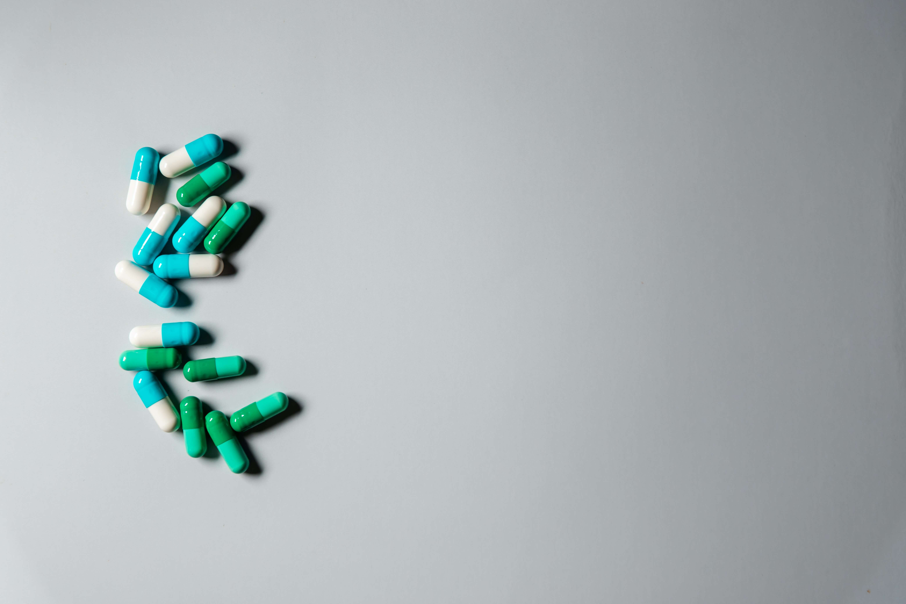

Биология, обществознание, русский
С такой комбинацией вы можете получить образование в сверах коррекционной и обычной педогогики и психологии.  Коррекционный педагог — это дефектолог или специалист в области изучения, обучения, воспитания и социализации детей с ограниченными возможностями здоровья (ОВЗ). Коррекционный психолог – это специалист, работающий с особыми состояниями, возникающими преимущественно в детском и подростковом возрасте под влиянием различных групп факторов, проявляющихся в замедлении или выраженном своеобразии психосоциального развития ребёнка, затрудняющие его социально-психологическую адаптацию, включение в образовательное пространство и дальнейшее профессиональное самоопределение. Образование в этой сфере можно получить в таких вузах, как:- Первый МГМУ им. Сеченова;
- ННГУ;
- УрФУ;
- ДВФУ;
- РНИМУ им. Н. И. Пирогова;
- СПбГПМУ.